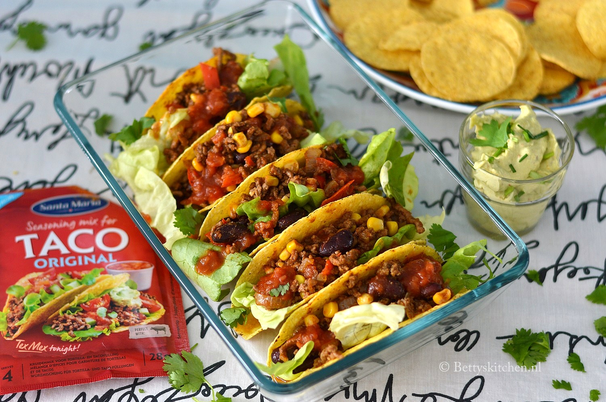

Waar komt de Taco nou eigenlijk vandaan?
De oorsprong van de taco is niet precies bekend. Volgens de Real Academia Española, uitgever van Diccionario de la Lengua Española is het
een typisch Mexicaanse gerecht van een maïstortilla gevouwen rond voedsel. Deze betekenis van het Spaanse woord “taco” is een Mexicaanse innovatie.
In andere dialecten betekent “taco” soms heel wat anders.
Een mogelijkheid is dat het woord afkomstig is uit het Nahuatl- woord “tlahco”, wat betekent “half” of “in het midden” in de zin dat voedsel in het midden
van een tortilla zou worden geplaatst. Bovendien waren er in de pre-Colombiaanse samenleving gerechten die analoog aan de taco waren, zoals het Náhuatl-woord “tlaxcalli” (een soort maïstortilla).
De taco is voorbij aan de komst van de Spaanse in Mexico. Er is bewijs dat de inheemse bevolking die aan het meer van de Vallei van Mexico woont traditionele tacos gevuld hebben met kleine visjes.
Bernal Díaz del Castillo schreef tijdens het schrijven van de Spaanse conquistadors over het eerste tacofeest dat door Europeanen werd genoten.
De Ingrediënten
- 1 pak (12 stuks) taco schelpen
- 1 grote ui
- 1 flinke teen knoflook
- 1 rode paprika
- 400 gram rundergehakt
- 1 klein blikje mais
- 1 klein blikje kidney bonen
- 1 zakje taco kruidenmix
- 100 ml water
- 1 potje taco saus
- 75 gram boter sla of ijsberg sla
- olijfolie
Eventueel erbij
- 1 zak tortilla chips
- 2 eetrijpe avocado's
- 1 flinke lepel creme fraiche
- 1 zakje guacamole kruidenmix
Benodigdheden
- Oven
- Bakplaat, bekleed met bakpapier
- Hapjespan
- Bolzeef
- Ovenschaal
Bereidingswijze
- Verwarm de oven voor op 125 graden (120 hete lucht). Haal de taco’s uit de verpakking en plaats op hun kant op de bakplaat.
Laat het papieren bakje zitten, om breken te voorkomen. Bak de taco’s in de voorverwarmde oven gedurende 15 minuten en laat daarna afkoelen. - Ondertussen pel en snipper je de ui. Pel de knoflook en pers deze uit. Was de paprika, verwijder de steel en zaadlijst en snijd in kleine blokjes.
Verhit een scheutje olijfolie in de hapjespan en bak hierin het gehakt rul. Voeg de ui, knoflook en paprika toe en bak mee gedurende 4-5 minuten. Blijf af en toe roeren. - Giet ondertussen de blikjes mais en kidneybonen in de bolzeef en spoel goed af onder de kraan. Laat uitlekken.
Strooi het zakje tacokruiden in de pan, samen met 100 ml water. Roer goed door. Voeg vervolgens de mais en kidneybonen toe en roer nogmaals goed om.
Laat het gehaktmengsel 5 minuten zachtjes doorkoken, zonder deksel. Roer in de laatste minuut 1/2 potje taco saus erdoorheen. - Maak ondertussen ook de guacamole: Snijd twee avocado’s doormidden, verwijder de pit en lepel de vrucht uit. Prak de avocado’s helemaal fijn.
Roer hier vervolgens de creme fraiche en het zakje met guacamole kruidenmix doorheen. Zet apart. - Vul de afgebakken taco’s met een klein beetje slablad. Stop er vervolgens 2-3 eetlepels gehaktmengsel in en zet rechtop in een ovenschaal.
Serveer de taco’s met gehakt in de schaal en lepel hier het laatste beetje taco saus overheen. Geef er de tortilla chips en de guacamole bij. Die guacamole is ook superlekker om je taco in te dippen!